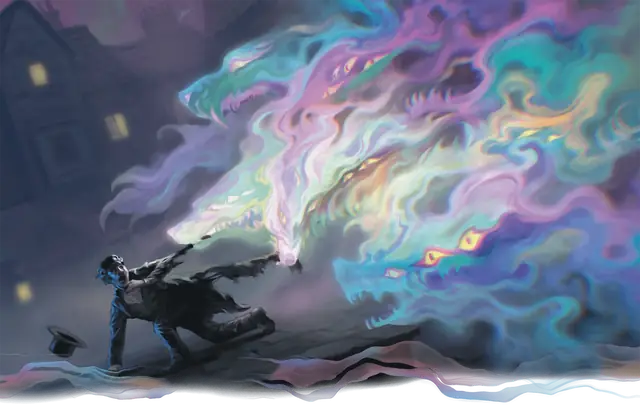

Туманный ужас
Mist Horror
Большая Нежить, Хаотичная Злая

Класс Защиты 13 Инициатива +2 (12)
Хиты 45 (7к10 + 7)
Скорость 25 футов, Полёта 25 футов (парит)
| мод | спас | ||
|---|---|---|---|
| СИЛ | 1 | −5 | −5 |
| ЛОВ | 15 | +2 | +2 |
| ТЕЛ | 12 | +1 | +1 |
| мод | спас | ||
|---|---|---|---|
| ИНТ | 6 | −2 | −2 |
| МДР | 13 | +1 | +1 |
| ХАР | 16 | +3 | +3 |
Сопротивление урону Дробящий, Колющий, Рубящий
Иммунитеты Яд; Бессознательный, Испуганный, Истощение, Окаменевший, Опрокинутый, Опутанный, Отравленный, Очарованный, Парализованный, Схваченный
Чувства пассивное Восприятие 11, Слепое зрение 120 футов
Языки нет
Опасность 3 (700 опыта; БВ +2)
Особенности
Воздушное тело. Туманный ужас может входить в пространство другого существа и заканчивать там ход. Он может проходить через пространство шириной всего 1 дюйм, не тратя на это дополнительное перемещение.
Одно целое с Туманами. Когда туманный ужас находится в тумане — как в густом, так и в неплотном, — он Невидим. Туманный ужас Недееспособен, если он находится вне тумана.
Действия
Мультиатака. Туманный ужас совершает две атаки Раздиранием разума. Он может заменить одну из этих атак использованием Сотворением заклинаний (Приказ), если тот доступен.
Раздирание разума. Бросок рукопашной атаки: +5, досягаемость 5 фт. Попадание: 8 (1к10 + 3) Психического урона.
Сотворение заклинаний. Туманный ужас сотворяет одно из следующих заклинаний, не нуждаясь в компонентах заклинания (заклинательная характеристика — Харизма, Сл спасброска заклинаний 13):
Неограниченно: Туманное облако
1/день: Приказ
Бонусные действия
Внушение страха (Перезарядка 4–6). Спасбросок Мудрости: Сл 13, все существа в пространстве туманного ужаса. Провал: Цель Испугана до начала следующего хода туманного ужаса.
Бонус мастерства +2
Среда обитания Любая
Сокровища Отсутствуют
Туманный ужас
Бесформенный преследователь в Туманах
Туманы, разделяющие Домены Ужаса, отнюдь не безопасны — и отнюдь не пусты. Туманные ужасы — это ожившие клубы пара, едва различимые в толще Туманов. В присутствии живых существ эти зыбкие кошмары принимают облик величайших страхов зрящего. Обличья эти сугубо индивидуальны: каждый, кто взглянет на туманный ужас, видит его в том виде, который ужасает именно его. За пределами же Туманов туманный ужас быстро теряет связность и опадает безвредным паром.